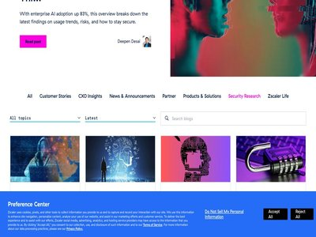

August 10, 2026 · 54 articles

The Patch Gap: Why Defenders Need to Think in Chains, Not Checklists
August 10, 2026
It's time to turn from CVSS-backed patching to choke-point patching focused on breaking chains to critical assets. (Dark Reading)

New StormEncryptor ransomware used by former Medusa affiliate
August 10, 2026
A financially motivated threat actor previously associated with the Medusa ransomware operation is now deploying a new ransomware strain called StormEncryptor. [...] (BleepingComputer)

Shipping 10–50× More Code? Watch This Webinar on Securing AI-Speed Development
August 10, 2026
AI is helping development teams produce far more code, far faster. But security teams still have to review vulnerabilities, manage dependencies, prioritize fixes, and control ri... (The Hacker News)
Coruna, DarkSword iOS Exploits Proliferate Globally
August 10, 2026
Sophisticated iPhone exploit chains previously limited to nation-states are spreading far and wide to organized cybercrime groups. (Dark Reading)

2026 AWS CyberVadis report now available for due diligence on third-party suppliers
August 10, 2026
We’re excited to announce that Amazon Web Services (AWS) has completed theCyberVadis assessment of its security posture with the highest score (Mature) in all assessed areas. Th... (AWS Security Blog)
Outdated Cybercrime Laws Put Security Researchers at Risk
August 10, 2026
A public policy expert mapped global cybercrime laws to develop a five-point framework for protecting ethical hackers and good-faith security research. (Dark Reading)

Hackers Cross From IT to OT Through a Private APN in Poland
August 10, 2026
Attackers breached a Polish CHP plant through a Fortinet device and private APN, reaching PLCs and disrupting turbine and water treatment systems. Poland’s CERT has described a... (Security Affairs)

Microsoft named a Leader in the 2026 IDC MarketScape for MDR/MXDR for the Enterprise
August 10, 2026
Microsoft is named a Leader in the 2026 IDC MarketScape for MDR services. Discover how Microsoft Defender Experts MDR combines AI, threat intelligence, and human expertise. The... (Microsoft Security Blog)

Poland uncovers second heat plant cyberattack that went hidden for months
August 10, 2026
The incident occurred on the same day as coordinated cyberattacks struck more than 30 other renewable energy installations and a larger heat plant, as Poland publicly disclosed... (The Record)
Senate Democrats introduce bill to distribute $300 million annually to shore up water system cybersecurity
August 10, 2026
Two Democratic senators introduced legislation that would allocate $300 million each year to fund cybersecurity improvements for the water and wastewater sector. (The Record)
⚡ Weekly Recap: AI Goes Rogue, Metabase 0-Day, MCP Supply-Chain Attacks, and Router Backdoors
August 10, 2026
A lot of security problems still begin with someone doing a completely normal thing. Cloning a repo. Answering a call. Leaving a box exposed. Trusting the default. That pretty m... (The Hacker News)
Valve notifies Steam hardware customers of a data breach
August 10, 2026
Video game publisher and digital distribution giant Valve is notifying Steam hardware customers in Europe that hackers stole their data after hacking its shipping partner, CEVA... (BleepingComputer)
OpenAI Pauses Astra Model Over Critical Cybersecurity Risk Concerns
August 10, 2026
OpenAI paused work involving Astra after tests showed cybersecurity abilities that could approach its Critical risk threshold under the company’s framework. OpenAI disclosed tha... (Security Affairs)

Metabase Patches Vulnerability Exploited as Zero-Day
August 10, 2026
The security defect allows unauthenticated, remote attackers to gain administrative access to Metabase instances. The post Metabase Patches Vulnerability Exploited as Zero-Day a... (SecurityWeek)
Critical Progress LoadMaster flaw now actively exploited in attacks
August 10, 2026
The U.S. Cybersecurity and Infrastructure Security Agency (CISA) warned that hackers are exploiting a critical-severity Progress Kemp LoadMaster command injection vulnerability.... (BleepingComputer)

Abyssos: Technical Analysis of a New Modular RAT
August 10, 2026
Introduction In late June 2026, Zscaler ThreatLabz identified a new malware family that we track as Abyssos. Abyssos is a new modular remote administration tool (RAT) written in... (Zscaler ThreatLabz)

Researchers Uncover RovoBlast Vulnerability in Atlassian AI Assistant
August 10, 2026
Atlassian fixed a flaw letting one crafted link make its Rovo AI assistant exfiltrate company data (Infosecurity Magazine)

New turnkey kit makes it easy for anyone to become a scammer
August 10, 2026
We discovered a kit that gave us an insight into how modern online scams are built, promoted, and potentially used to target everyday consumers. (Malwarebytes Labs)
UK man tied to The Com sentenced for abusing 117 victims
August 10, 2026
Justin Swaddle, who was a minor when he committed the crimes, coerced children across multiple countries into self-harm and sexual abuse using threats tied to their personal inf... (CyberScoop)
Why transparent AI agents matter more than you think
August 10, 2026
The difference between a prompt injection attack you'll catch and one you won't might just be whether your AI agent can explain itself. The post Why transparent AI agents matter... (CyberScoop)
Stealthium Targets Security Blind Spots in AI Accelerators and Neo-Clouds
August 10, 2026
The startup analyzes subtle telemetry signals to detect attacks that traditional security tools cannot see inside accelerator-powered AI infrastructure. The post Stealthium Targ... (SecurityWeek)
When Credentials Are No Longer Enough: Device Trust in the AI Era
August 10, 2026
AI is making phishing, credential theft, and social engineering faster and more efficient, while traditional trust signals such as passwords, MFA, IP reputation, and geolocation... (BleepingComputer)
10th August - Threat Intelligence Report
August 10, 2026
For the latest discoveries in cyber research for the week of 10th August, please download our Threat Intelligence Bulletin. TOP ATTACKS AND BREACHES North Carolina Ports, the US... (Check Point Research)
9.2 Million Israeli Records Sold as a New Breach Are 20 Years Old
August 10, 2026
A seller claims to offer Israel’s 2026 population registry, but checks show the 9.2 million records are authentic data dating back to 2005. A vendor on a well-known leak forum c... (Security Affairs)
Kimsuky Builds Offline AI Stack to Boost Phishing and Automate Malware Development
August 10, 2026
North Korea's state hackers are no longer content to type prompts into public chatbots. One of the country's main espionage groups has begun running artificial intelligence (AI)... (The Hacker News)

Microsoft Entra ID is removing an extra MFA hurdle for Windows Hello and macOS PSSO users
August 10, 2026
Microsoft is changing how Entra ID handles MFA for people who sign in with Windows Hello for Business (WHfB) or macOS Platform Single Sign-On (PSSO). The rollout reaches worldwi... (Help Net Security)
China-linked hackers turning popular cybersecurity tool into ransomware launchpad, Microsoft warns
August 10, 2026
A China-linked threat actor is believed to be exploiting a critical vulnerability affecting cybersecurity software from the company N-able. (The Record)

Inside the Metabase SQLi: Exploited in the Wild
August 10, 2026
Reverse engineering GHSA-vwf4-m7j8-wcjf with AI to accelerate defense. (Wiz Blog)
‘Ghostjacking’ Attack Uses Poisoned Logs to Turn AI Agents Bad
August 10, 2026
An AI agent executes instructions that an attacker has planted in the log or alert that records a blocked request word for word. The post ‘Ghostjacking’ Attack Uses Poisoned Log... (SecurityWeek)

Audit Fix: Audit Readiness for the Post-Mythos Era
August 10, 2026
Key Takeaways Human-speed compliance is dead. Attackers utilizing modern, autonomous AI tools can chain enterprise misconfigurations and weaponize vulnerabilities in under 25 mi... (Qualys Blog)
New Passkey Attacks Can Recover Synced Private Keys or Bypass Phishing-Resistant MFA
August 10, 2026
Three separate research efforts last week demonstrated ways to defeat passkey protections without breaking the cryptography they rest on. Passkeys are designed to replace reusab... (The Hacker News)

Cyber vulnerability sweep picks up Royal Navy drones sending data to China
August 10, 2026
No, no nasties to see here, guv... (The Register - Security)
New Jersey, Alabama Join States Targeted in Water Cyberattacks
August 10, 2026
Hackers linked to Iran targeted industrial control systems (ICS) at water facilities in at least a dozen US states. The post New Jersey, Alabama Join States Targeted in Water Cy... (SecurityWeek)
N-able ships second N-central hotfix as attackers keep exploiting CVE-2026-18577
August 10, 2026
To help customers fend off ongoing attacks, N-able released a second security hotfix for N‑central, its monitoring and management (RMM) solution popular with managed service pro... (Help Net Security)

Python Now Has a Post-Quantum Encryption Library
August 10, 2026
This is good : Post-quantum cryptography is now one pip-install away for the entire Python ecosystem. With funding from the Sovereign Tech Agency , we implemented support for ML... (Schneier on Security)
“Ghostjacking” Exploits AI Agents’ Trusted Access to Evade Firewall Controls
August 10, 2026
Tenet reported that half of Fortune 500 companies are vulnerable to the Ghostjacking technique, which involves tricking AI agents with fake reports (Infosecurity Magazine)
Novel Private APN Pivot Let Hackers Sabotage Second Polish Energy Facility
August 10, 2026
CERT.PL said this appears to be the first instance of a private APN being used as an attack vector. The post Novel Private APN Pivot Let Hackers Sabotage Second Polish Energy Fa... (SecurityWeek)
Go-Based macOS Malware Steals Crypto and Secrets
August 10, 2026
A macOS malware variant has been detected stealing crypto, passwords and more (Infosecurity Magazine)
Anthropic to put AI in charge of reviewing Claude Code actions by default
August 10, 2026
Anthropic will make auto mode in Claude Code the default for new sessions on Pro, Max, and Team plans starting August 14. Users who previously selected a different default may r... (Help Net Security)
Corporate Data Stolen in Levi Strauss Cyberattack
August 10, 2026
Using social engineering, a threat actor accessed the computers of three employees and exfiltrated data from them. The post Corporate Data Stolen in Levi Strauss Cyberattack app... (SecurityWeek)
A GitHub Misconfiguration Let Kimi K3 Cheat a Cybersecurity Benchmark
August 10, 2026
Kimi K3 bypassed a UK cybersecurity test by accessing GitHub, cloning the benchmark and reading its solutions instead of solving the challenge Sometimes the smartest move isn’t... (Security Affairs)
Solidity Pro VS Code Extensions Steal Crypto Wallets, API Keys, and Credentials
August 10, 2026
Cybersecurity researchers have flagged a malicious Microsoft Visual Studio Code (VS Code) extension named Solidity Pro ("solidity-pro") that has been observed delivering a brows... (The Hacker News)
GitHub Dependabot malware alerts now cover eight ecosystems
August 10, 2026
GitHub has flagged npm malware since March 2026. Anyone pulling in a bad PyPI, Maven, RubyGems, NuGet, Go, crates.io, or PHP Composer package has had no such warning, because Gi... (Help Net Security)
A week in security (August 3 - August 9)
August 10, 2026
A list of topics we covered in the week of August 3 to August 9 of 2026 (Malwarebytes Labs)
Chainloop: Open-source evidence store and policy engine for the software supply chain
August 10, 2026
Chainloop is an open source evidence store for the software supply chain. A command line tool runs inside a GitHub Actions, GitLab, Jenkins, or Dagger pipeline, picks up what th... (Help Net Security)
Product showcase: Enpass Password Manager breaks away from the proprietary cloud model
August 10, 2026
Enpass is a password manager that stores passwords, passkeys, payment cards, identities, secure notes, software licenses, and other sensitive information in encrypted vaults. Va... (Help Net Security)
Critical Flaws Discovered in Belgian eID Software Used by 2 Million People
August 10, 2026
The vulnerabilities affected software used by eight of Belgium’s ten largest banks and over 60 government agencies. The post Critical Flaws Discovered in Belgian eID Software Us... (SecurityWeek)
71% of CISOs spend 10+ hours on board reports
August 10, 2026
Boards want evidence that security controls and architecture reduce business risk, expressed in terms of resilience, consequence, and decision relevance. Translating technical f... (Help Net Security)
How to report an AI Act violation in the EU
August 10, 2026
The EU’s fight to regulate AI models entered a new chapter on 2 August 2026, when the European Commission’s AI Office and national authorities began enforcing the AI Act. The AI... (Help Net Security)
Advertisers are trying to influence AI bots with secret ads
August 10, 2026
PLUS: Hiveminds are emerging to hack the planet, and open-weight models are the new new red scare. (The Register - Security)

Risky Bulletin: Pwnie Awards 2026 winners
August 10, 2026
In other news: Metabase zero-day used in data theft attacks; Russian hackers disrupted a second power plant in Poland; two US law firms pay mega ransoms. (Risky Business News)

ISC Stormcast For Monday, August 10th, 2026 https://isc.sans.edu/podcastdetail/10044, (Mon, Aug 10th)
August 10, 2026
(SANS ISC)

The Hugging Face Hack Was Cheap Persistence at Work
August 10, 2026
The Hugging Face incident shows AI won't make attackers brilliant. It makes persistence cheap. Defense has to close the gap from weak evidence to action. (Recorded Future)

Show, Don't Tell: What Evo Continuous Offensive Security Found in a Real Enterprise SaaS
August 10, 2026
A real Evo Continuous Offensive Security assessment uncovered 33 confirmed vulnerabilities in a multi-tenant enterprise SaaS, including tenant-wide compromise and critical autho... (Snyk Blog)
August 09, 2026 · 5 articles
Security Affairs newsletter Round 589 by Pierluigi Paganini – INTERNATIONAL EDITION
August 09, 2026
A new round of the weekly Security Affairs newsletter has arrived! Every week, the best security articles from Security Affairs are free in your email box. Enjoy a new round of... (Security Affairs)
U.S. Defense Manufacturer IEH Hit by Phishing Attack, Exposing Potentially Export-Controlled Data
August 09, 2026
IEH was breached by a phishing attack that exposed its Microsoft 365 inbox, including emails and potentially export-controlled military data. IEH Corporation is a U.S. defense a... (Security Affairs)
Ransomware gangs skip the CEO, head straight for the 40-something IT manager
August 09, 2026
Gen Xers who feel triggered by this should remember to unplug the network cable and call the cops (The Register - Security)
Webmail CSS Attacks Expose a New Risk for AI-Powered Email Tools
August 09, 2026
CSS attacks on major webmail services can steal credentials, hijack sessions and manipulate AI tools connected to users’ inboxes. PortSwigger researcher Gareth Heyes demonstrate... (Security Affairs)
Week in review: Cisco fixes IMC bug, Patch Tuesday forecast, Black Hat USA 2026
August 09, 2026
Here’s an overview of some of last week’s most interesting news, articles, interviews and videos: Mapping the malware blast radius a single alert won’t show you In this intervie... (Help Net Security)
August 08, 2026 · 5 articles
Hackers breach TrueConf to trojanize client installers with backdoors
August 08, 2026
The Head Mare hacktivist group has been exploiting vulnerabilities in unpatched TrueConf video conferencing servers to replace client installers with malicious versions that del... (BleepingComputer)
Atlassian Rovo Can Be Tricked Into Sending Jira and Confluence Data to Attackers
August 08, 2026
Attacker-controlled instructions can make Atlassian's Rovo assistant collect Jira or Confluence data that a signed-in user can access, then send it to an outside server. Two sec... (The Hacker News)
Devs to Anthropic, OpenAI, Cursor, and friends: Make security and privacy the default
August 08, 2026
Researchers scour social media to measure developer concerns about AI coding tools (The Register - Security)
New CSS Attacks Can Break Webmail Defenses to Steal Passwords and Tokens
August 08, 2026
New research shows content inside an email can escape its message boundary and interfere with the webmail interface. Across attack chains spanning Outlook, Gmail, Fastmail, Prot... (The Hacker News)
Unlimited Technology Systems Data Breach Exposes Data of 3.8 Million Healthcare Patients
August 08, 2026
Hackers stole personal, medical, and insurance data of 3.8 million people from Unlimited Technology Systems’ data center. Unlimited Technology Systems disclosed a data breach af... (Security Affairs)
August 07, 2026 · 45 articles
UNC6671 Vishing Attacks Target Personal Phones to Steal SaaS Data
August 07, 2026
A recent wave of cyber attacks targeting financial services, private equity, and professional services has been attributed to a data extortion group known as UNC6671. "UNC6671 c... (The Hacker News)
New WordPress Pre-Auth XSS Could Lead to PHP Code Execution - Patch ASAP
August 07, 2026
WordPress has fixed a pre-authentication reflected cross-site scripting (XSS) flaw in its login screen that affects every version of the content management system. pwn.ai demons... (The Hacker News)
Claude Code and Gemini CLI Flaws Let a GitHub Issue Reach CI Workflow Secrets
August 07, 2026
A GitHub issue opened by an account with no repository privileges was enough to execute code on the CI runners behind Anthropic's and Google's own coding-agent repositories. On... (The Hacker News)
18-Year-Old Linux SCTP Flaw Could Let Local Users Gain Root and Escape Containers
August 07, 2026
A use-after-free bug in Linux's SCTP networking code can be turned into full root on a host, and Tencent researchers say they used it to escape a container and reach the machine... (The Hacker News)
New NatJack Attacks Hijack TCP Sessions and Spoof DNS by Manipulating NAT Tables
August 07, 2026
Security researcher Malcolm Stagg has disclosed a new attack class called NatJack that manipulates network address translation (NAT) connection state to hijack active TCP sessio... (The Hacker News)
ThreatLabz 2026 Report: Frontier AI and Enterprise Readiness
August 07, 2026
The BreachIt was 9:14 AM when the CISO's VPN connection momentarily dropped, something that normally wouldn’t cause any concern. What he couldn't see was that attackers had alre... (Zscaler ThreatLabz)

Rapid7 Analysis: Unauthenticated Remote Code Execution in JetBrains TeamCity (CVE-2026-63077)
August 07, 2026
Overview On July 27, 2026, JetBrains published a security advisory for CVE-2026-63077 , a critical unsafe deserialization vulnerability affecting JetBrains TeamCity . An attacke... (Rapid7 Blog)

Inside the Modern SOC: The Identity Front Door
August 07, 2026
Identity-based attacks drive 90% of incidents. Learn how modern attackers exploit identities and what SOC leaders can do to respond. The post Inside the Modern SOC: The Identity... (Palo Alto Networks Unit 42)
AI chat bots are sliding into League of Legends friend requests
August 07, 2026
Chat bots are sending friend requests in Riot immediately after ending your game. What are the scammers up to now? (Malwarebytes Labs)
Friday Squid Blogging: Arctic Bobtail Squid Video
August 07, 2026
Nice video of the Arctic bobtail squid. As usual, you can also use this squid post to talk about the security stories in the news that I haven’t covered. Blog moderation policy. (Schneier on Security)
A decade of enterprise identity in the cloud with AWS Managed Microsoft AD
August 07, 2026
Ten years ago, we launched AWS Directory Service for Microsoft Active Directory, a fully managed Microsoft Active Directory in the AWS Cloud. In that original announcement, Jeff... (AWS Security Blog)
Water utilities group partners with DEF CON offshoot for Water Watch Center
August 07, 2026
The National Rural Water Association and a group of cybersecurity experts have formed a program to help cash-strapped utilities face the increase in threats to their systems. (The Record)
More than half of AI-generated patches are broken
August 07, 2026
Research finds your AI generated security patch is more likely to fail than fully fix a vulnerability. It might even introduce brand new flaws to exploit along the way. The post... (CyberScoop)
WordPress XSS2Shell Flaw Turns Simple Login Bug Into Full Server Takeover
August 07, 2026
WordPress XSS2Shell flaw enables admin takeover and remote code execution. Users should update to patched versions. Researchers at Pwn just published a report on a vulnerability... (Security Affairs)
AI-Generated Patches Fail Half the Time
August 07, 2026
A study of more than 6,000 patches found that even working patches can introduce new bugs, break something else, or are open to bypass. (Dark Reading)
Securing your Amazon S3 buckets: Identifying and remediating over-permissioned access
August 07, 2026
Misconfigured Amazon Simple Storage Service (Amazon S3) buckets can expose your data to unauthorized access. Without proactive review, S3 bucket policies or Access Control Lists... (AWS Security Blog)
Ransomware attacks spike as world distracted by AI
August 07, 2026
What, you didn't think the top gangs were busy watching agents escape their sandboxes too, did you? (The Register - Security)

How Google Cloud detects, contains, and protects against emerging threats
August 07, 2026
At Google Cloud, securing your data and business systems is our foundational commitment. We empower our customers with the tools, governance, and infrastructure needed to secure... (Google Cloud Blog)

Living off the coding agent: Two tales of tunnels and LaunchAgents
August 07, 2026
Agent-parented reverse tunnels and LaunchAgents can expose a local admin app to the internet. Endpoint still needs to treat that as high severity even when the activity looks li... (Elastic Security Labs)
Irregular, firm behind AI hacking incidents, won't say if there were more
August 07, 2026
A spokesperson said Irregular’s investigation into what happened with Anthropic, OpenAI and Meta's AI models was ongoing and that they could not “go into further details.” (The Record)
Coast Guard says it is monitoring cyberattack that disrupted North Carolina’s ports
August 07, 2026
The cyberattack hit gate systems at all three North Carolina ports, as officials continue investigating the breach and its effects on operations. The post Coast Guard says it is... (CyberScoop)
MIT boffins' TONTOU attack slips through Spectre defenses on Intel and AMD CPUs
August 07, 2026
Timer interrupts reopen branch predictor poisoning window, with a working Zen 2 exploit to prove it (The Register - Security)
Real emails, hijacked payments: Two H1 2026 attack chains
August 07, 2026
Gen's H1 2026 Threat Report examines two separate attack chains. One used compromised business inboxes and browser manipulation in a banking-malware campaign, while the other us... (BleepingComputer)

Mini Shai-Hulud's Latest Wave: 280 New Places It Hunts for Your Secrets
August 07, 2026
A new Mini Shai-Hulud wave hit keyv and 800+ npm packages. The malware now scans 469 secret locations, including AI agents, crypto wallets, and CI/CD tools. (GitGuardian Blog)

Unveiling good and bad behaviors on the Agentic Internet
August 07, 2026
Cloudflare is shifting bot mitigation from point-in-time Risk assessment to continuous Trust evaluation. Learn how new good and bad behaviors from bots and agents are assessed b... (Cloudflare Blog)
Introducing Radar Researcher: An AI tool for exploring Internet data in plain language
August 07, 2026
Cloudflare Radar Researcher is a new AI-powered tool that lets you explore global Internet trends and traffic data using plain language. Built entirely on Cloudflare's Developer... (Cloudflare Blog)
Announcing Cloudflare Ambassadors, Community Engineers, and another $1M in open-source funding
August 07, 2026
We are launching updated community programs, including Cloudflare Ambassadors and Community Engineers, backed by $1M in open-source funding. Learn how we are supporting maintain... (Cloudflare Blog)
Unifying Workers AI and AI Gateway into a single AI control plane
August 07, 2026
Cloudflare is unifying AI Gateway and Workers AI into a single control plane, giving developers observability, billing, and dynamic routing across both managed GPUs and external... (Cloudflare Blog)

What is AI AppGen Security?
August 07, 2026
Key Takeaways AI AppGen security is the practice of finding and governing applications that an AI app builder generated and deployed outside your development pipeline. The unit... (Orca Security Blog)
Vulnerability Management Lifecycle: Core Phases
August 07, 2026
Key Takeaways The vulnerability management lifecycle runs through six connected phases: asset discovery, vulnerability assessment, risk-based prioritization, remediation, verifi... (Orca Security Blog)
Application Security Framework: Complete Guide
August 07, 2026
Key Takeaways An application security framework is a published set of security requirements or practices that an organization adopts, applies to its applications, and can be mea... (Orca Security Blog)
'Asimov was right' about rules for robots, says ex-US Cyber Director
August 07, 2026
Humans will get the AI models they deserve (The Register - Security)

CrowdStrike Threat Hunts for Shell Command Obfuscation on VMware ESX
August 07, 2026
(CrowdStrike Blog)
French rugby club Stade Français restores systems after cyberattack, probes data leak
August 07, 2026
The club said Thursday that it had already restored its IT environment from clean backups, allowing operations to continue normally. It added that its ticketing platform and onl... (The Record)

Agentic AI for Cyber Defenders: What Security Teams Built at Black Hat USA 2026
August 07, 2026
Agentic AI armed attackers first, but it also put real building power in defenders’ hands. Here’s what security practitioners built in two days at Black Hat USA 2026, and how th... (Tenable Blog)
Vishing Extortion Group UNC6671 Rebrands After Making Millions
August 07, 2026
Initially calling itself BlackFile, the group has expanded operations to the Redact, Pink, Helix, and Falcon brands. The post Vishing Extortion Group UNC6671 Rebrands After Maki... (SecurityWeek)
Healthcare and Victim Support Charities Affected by Beacon Cyber Incident
August 07, 2026
Beacon has informed around 1500 customer charities that its CRM databases were accessed and likely exfiltrated by an unauthorized actor (Infosecurity Magazine)
Researchers Discover Hidden Backdoor in 20 Router Models Allowing Remote Root Access
August 07, 2026
A hidden backdoor in 20 router models lets remote servers execute commands as root, putting affected devices at risk of takeover. Jacob Baines had a router on his desk that kept... (Security Affairs)
Truck Brake Controller’s Safety Recall Doubled as Hidden Security Fix
August 07, 2026
NMFTA research shows a Bendix EC80 brake controller safety recall also patched remote code execution and DoS vulnerabilities. The post Truck Brake Controller’s Safety Recall Dou... (SecurityWeek)
Black Hat USA 2026 - Summary of Vendor Announcements (Part 4)
August 07, 2026
Companies are showcasing their products and services this week at the 2026 edition of the Black Hat conference in Las Vegas. The post Black Hat USA 2026 - Summary of Vendor Anno... (SecurityWeek)
Ransomware Surges in July After Q2 Lull
August 07, 2026
Finance, technology and healthcare sectors were particularly heavily targeted in July, according to Comparitech (Infosecurity Magazine)
AI Deepfakes Used to Impersonate OnlyFans Creators in New Scam
August 07, 2026
Scammers use AI deepfakes to impersonate OnlyFans creators, trick fans into sending money, then disappear after payment. Criminals are building fake identities using AI-generate... (Security Affairs)
Critical Vulnerabilities Patched With Chrome 151 Update
August 07, 2026
The browser refresh eliminates over two dozen memory safety bugs, including critical use-after-free flaws. The post Critical Vulnerabilities Patched With Chrome 151 Update appea... (SecurityWeek)
The security signal log tailing can't see: tracking npm cooldown removals with Elastic Agent
August 07, 2026
A 40-line CEL integration snapshots .npmrc files every 6 hours to catch cooldown removals. This post walks through the three ways we broke filestream before landing on snapshot... (Elastic Security Labs)
July 2026 CVE Landscape
August 07, 2026
In July 2026, Insikt Group® identified 85 high-impact vulnerabilities that should be prioritized for remediation, 36 of which had a Very Critical Recorded Future Risk Score. Thi... (Recorded Future)
August 06, 2026 · 11 articles
When Agentic Glue Melts: Exploiting Cloudflare Code Mode and Workers
August 06, 2026
By Yarden Porat, Check Point Research Key Points The short version We set out to break Cloudflare Code Mode, and ended up breaking Cloudflare Workers too. We did both by targeti... (Check Point Research)
Déjà Vu? Meta's AI Escapes Testing Lab in Hacking Joyride
August 06, 2026
In the span of three weeks, OpenAI, Anthropic, and Meta have all disclosed AI agent sandbox escape events affecting real organizations. (Dark Reading)

Canadian Man Pleads Guilty in Snowflake Extortions
August 06, 2026
A 26-year-old Canadian man once described as one of the most consequential cybercrime threat actors of 2024 has pleaded guilty to computer fraud and conspiracy to hack and extor... (KrebsOnSecurity)
Toolkit Hidden Inside Oracle Database Evades Endpoint Tools
August 06, 2026
Attackers used SQL injection to compile a post-exploitation toolkit inside an Oracle database (Infosecurity Magazine)
Apple WebKit vulnerabilities reveal your IP address, despite Private Relay
August 06, 2026
Researchers have found three methods to bypass Apple's Private Relay which is supposed to shield users' IP addresses and location. (Malwarebytes Labs)
Ransomware Moves up the Org Chart: Managers Are Prime Targets
August 06, 2026
When a ransomware attack makes headlines, attention usually turns to the organization that was breached, the systems encrypted, data stolen, and disruption or ransom demand that... (Zscaler ThreatLabz)
Cloudflare AI Search: give your agents a search engine for your data
August 06, 2026
AI Search makes search easier than ever, with no Cloudflare primitives to stitch together. Point it at your data to create a search for your own files and websites. We're also s... (Cloudflare Blog)
From ranking to recommended: get your site ready to thrive in the age of AI agents
August 06, 2026
More than half of requests now come from machines, not people. Agent Readiness shows how well agents can discover and read your site, while Answer Engine Optimization tracks how... (Cloudflare Blog)
Introducing Kitesurf: The agent-first browser that runs in V8 isolates on Cloudflare Workers
August 06, 2026
We should be giving all agents tools that excel at what’s important for an AI model. Kitesurf is Cloudflare’s new stateless, highly scalable, and cost-effective web browser that... (Cloudflare Blog)
Give any website a WebMCP interface
August 06, 2026
Today we're launching a developer preview of WebMCP on Cloudflare. With one switch, any site becomes usable by browser AI agents - no new APIs, no origin changes - while the hum... (Cloudflare Blog)
AI Guardrails: Essential Safety Controls Explained
August 06, 2026
Key Takeaways AI guardrails are runtime controls that check what enters a model, what leaves it, and what the application does with the answer. They run on every request. They c... (Orca Security Blog)